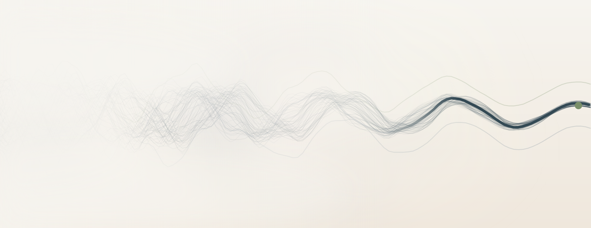
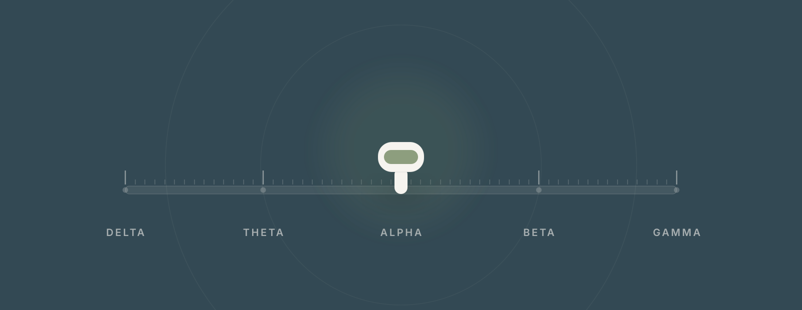
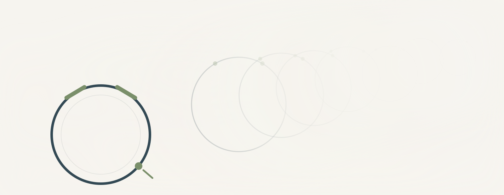
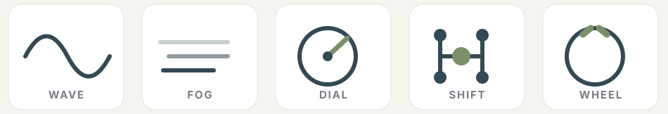

Working surface
Visual directions, round 1
Three ways to picture the thing the site actually sells: the fog you are in, and the moment you take hold of the controls.
Light variant for inner pages: Fog lid, on the real guide page.
This page is a draft. It is marked noindex and it is not linked from the site. Nothing here is live copy. These are plates to react to, not layouts to approve.
The feeling we are trying to draw
Everyone is reaching for your attention and your state of mind, and almost nobody teaches you how to take hold of your own controls. The site's job is to hand someone the wheel, the shifter, and the manual, and to let them feel the fog lift.
"You have stumbled across the instruction manual that can help you shift brain states, just like an automatic transmission user being introduced to a manual and feeling that power for the first time."
So every plate below lives somewhere on the same arc: fog and pull at one end, clarity and control at the other. The site as built today only shows the calm end. The fog is missing, and without the fog the relief does not land.
Direction A. Signal from the fog
Many signals pulling in different directions dissolve into one you can follow. The fog is not a picture of anything. It is what confusion feels like when it lifts.

What it does
- Shows the arc, not just the destination. The tangled left and the clear right are the same field.
- Stays abstract, so it never claims anything medically. No brains, no scans, no aura.
- Uses the palette already on the site, so it drops in without a redesign.
- Works as a wide section band, a hero base, or a divider between the calm sections.
Direction B. The instrument
The states are not a mystery. They are positions on a control you can move, and you are the one moving it.

What it does
- Names the states in plain sight and puts you at the controls in the same image.
- Gives the site a dark band. Every surface today is cream, so this is the only real contrast available.
- Carries the manual-transmission idea without a car: a rail, detents, and a lever that sits where you put it.
- Doubles as a diagram the guide page can label and the tools page can reuse.
Direction C. Others in the fog
You are not the only one holding a wheel. The others are further back in the same weather, doing the same thing.

What it does
- Answers "you are not alone" directly, which is one of the things you asked this to carry.
- Shows the same object repeated at different distances, so it reads as a practice rather than a gadget.
Honest read
- This is the weakest of the three as drawn. It reads closer to a diagram of circles than to a crowd of people, and the haze does less work here than it does in Direction A.
- It is included because the idea is right and it may be the one you want. If you like the idea, it needs a real redraw rather than a tweak.
The mark set
Five line marks in one hand, to replace the gear emoji the tiles use now. Same stroke weight as the plates.

What it does
- Removes the one borrowed asset on the site. An emoji is someone else's drawing style sitting inside yours.
- Gives the guide, tools, and picker pages a consistent way to point at concepts instead of decorating them.
What I would do with these
- B is the anchor. It says the most in one image and it introduces the contrast the site lacks.
- A is the connective tissue. It can carry the top of the homepage, the guide, and the transition into the tools page.
- C waits unless the "you are not alone" beat matters more to you than I read it.
- The marks go in either way, because they cost nothing and they retire the emoji.
- None of this touches the type, the palette, or the layout. It adds a visual layer on top of what is already there, so nothing built so far has to be thrown out.
Scroll prototype of the fog motif: Scroll out of the fog.
Round 2, the same console in three finishes: Three temperatures.
Tell me which ones move you and which ones do not, in whatever words come out. "More like this, less like that" is enough. I will render the next round and show you pixels again.